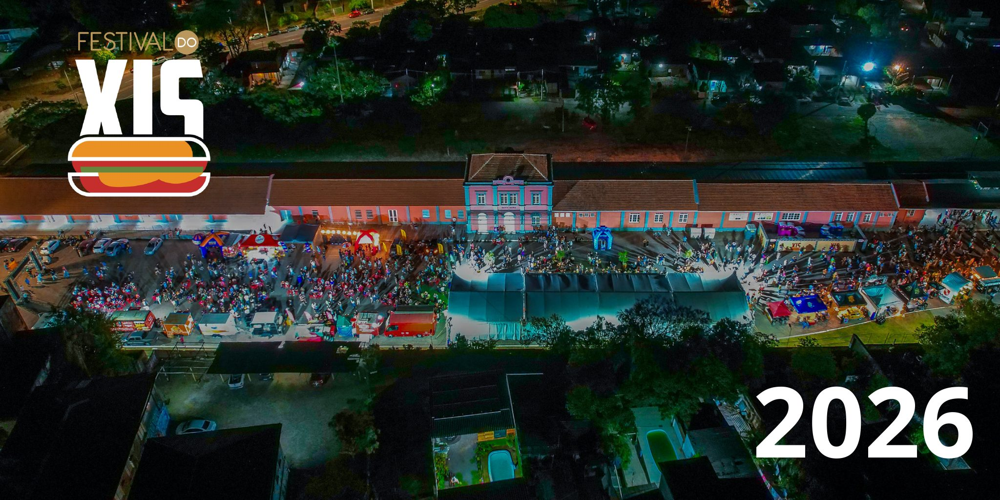

Prefeitura de Santa Maria
Programa Xis · Cidade do Xis
Programa Xis · Cidade do Xis
Lançamento Oficial
4º Festival Nacional do Xis
2026
13, 14 e 15 de novembro · Largo da Gare · Santa Maria/RS
Painel "Cidade do Xis" · 07/10 · Lab Criativo da Vila Belga
Realização: Prefeitura Municipal de Santa Maria · RS e Sindhturr
Execução: Secretaria de Desenvolvimento Econômico e Inovação · Secretaria de Cultura · Secretaria de Turismo · Secretaria de Comunicação
Execução: Secretaria de Desenvolvimento Econômico e Inovação · Secretaria de Cultura · Secretaria de Turismo · Secretaria de Comunicação
Realização
Realização
Sindicato de Hotéis, Restaurantes, Bares e Similares · Realização
Execução · Secretarias Municipais
Desenvolvimento Econômico e Inovação
coordenação geral
Cultura
programação e patrimônio
Turismo
promoção e visitantes
Comunicação
divulgação e imprensa
Lançamento Oficial · Festival do Xis 2026cidadedoxis.com
Patrocinadores
Marcas que fazem o Festival acontecer
Sicredi
Cooperativa de Crédito
Cooperativa de Crédito
Banrisul
Imembuí Microfinanças
CredXis · crédito para a cadeia do xis
CredXis · crédito para a cadeia do xis
Panifício Mallet
Pão Oficial do Festival
Pão Oficial do Festival
Cotas de patrocínio em formalização — o conjunto final de marcas será atualizado até o evento.
Lançamento Oficial · Festival do Xis 2026cidadedoxis.com

Você está na cidade do XIS
Nenhuma outra cidade do Brasil tem essa história para contar.
E ela começa de novo em novembro.
13 · 14 · 15 de novembro — Largo da Gare
E ela começa de novo em novembro.

Santa Maria, a Cidade do Xis
De tradição querida a estratégia de cidade
Lei da Cidade do Xis
Dia do Xis · 28 de maio
Festival no calendário oficial
Festival no calendário oficial
Programa Xis
capacitação e padronização
da cadeia · SMDEI
da cadeia · SMDEI
CredXis
linha de crédito para
as operações e a cadeia
as operações e a cadeia
cidadedoxis.com
vitrine · mapa · voto popular
· gestão do evento
· gestão do evento
Aprovado por unanimidade na Câmara de Vereadores de Santa Maria

O Xis como Patrimônio Cultural
O xis é o jeito de Santa Maria se reunir à mesa
Patrimônio Gastronômico
reconhecido em lei como
patrimônio cultural da cidade
patrimônio cultural da cidade
Memória da Gare
o Festival devolve vida ao
patrimônio ferroviário
patrimônio ferroviário
Histórias de família
gerações empreendendo
em torno da chapa
em torno da chapa

O Xis impulsionador do Turismo
Gente de todo o estado vem provar o original
Hotelaria e serviços
um fim de semana de alta
ocupação na cidade
ocupação na cidade
Turismo gastronômico
o xis como motivo
de viagem a Santa Maria
de viagem a Santa Maria
Operações de fora
lancherias de outras cidades
já se inscrevem para vir
já se inscrevem para vir
35 mil
visitantes na 3ª edição
3 dias
de cidade cheia e viva

E agora, o que vem por aí
O Festival 2026
13, 14 e 15 de novembro
Largo da Gare
97 espaços
Pátio Rural

Mega Xis — a ação símbolo da edição
Um xis gigante, feito a muitas mãos, para abrir o Festival
O maior xis
preparado coletivamente
pelas operações do Festival
pelas operações do Festival
Momento de mídia
a imagem da edição 2026
para o estado inteiro ver
para o estado inteiro ver
Feito em conjunto
operações, padaria oficial
e parceiros juntos na chapa
e parceiros juntos na chapa

Concurso "Come Xis"
A disputa mais divertida (e saborosa) do Festival
Para o público
a plateia vira protagonista
no palco do Festival
no palco do Festival
⏱
Ao vivo
disputa animada com
torcida e mediação
torcida e mediação
Premiação
prêmios dos patrocinadores
e fama de bom de garfo
e fama de bom de garfo
Detalhes e inscrições serão divulgados na programação oficial

Concurso "Xis da Galera"
Quem escolhe o melhor xis é quem come
Voto popular
o público vota no seu xis
favorito durante o Festival
favorito durante o Festival
Pela plataforma
votação em
cidadedoxis.com
cidadedoxis.com
Selo de campeão
o Xis da Galera 2026 leva o
título escolhido pela cidade
título escolhido pela cidade
Formato e período de votação serão divulgados na programação oficial
Nos vemos no Largo da Gare
13, 14 e 15 de novembro de 2026 · entrada gratuita
cidadedoxis.com
Prefeitura de Santa Maria · Sindhturr · SMDEI · Cultura · Turismo · Comunicação